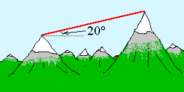

A laser is used to measure the distance between markers on two mountaintops. The laser measures the round-trip distance from the top of the first mountain, to a mirror on the top of the second, and back to the top of the first mountain, as being 5150.7 m. It measures this round-trip distance to an accuracy of 20 cm.
Given the angle between the two mountaintops as exactly 20° above the horizontal, what is the relative error in the horizontal distance between the two mountaintops?